Top Albums of 2016
So this is it! You've already seen our top tracks of the year, and now it's time to reveal our top albums of the year. A longstanding tradition since 2003, our full list consists of 50 albums selected by the entire No Ripcord staff.
But first...
...there's always a select, praise-worthy few that just didn't quite make it to the official list and we feel should get the acknowledgement they deserve. You can't go wrong with giving any of these a chance.
...
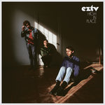EZTV
High in Place
(Captured Tracks)
The New York City power-pop trio almost make our year-end list for the second year in a row.
 Katie Dey
Katie Dey
Flood Network
(Universal Music New Zealand Limited)
The Melbourne, Australia experimental bedroom recorder's self-released effort leads to a promising future.
Hinds
Leave Me Alone
(Mom + Pop Music)
The Spanish foursome's debut makes garage pop sound fun again.
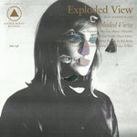Exploded View
Exploded View
(Sacred Bones)
The collaborative project between Anika and a trio of notable Mexico City musicians is an artful blend of post-punk and Krautrock.
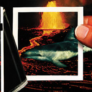The Thermals
We Disappear
(Saddle Creek)
The Portland, Oregon punk pop mainstays are perennial No Ripcord favorites.
 Dinosaur Jr.
Dinosaur Jr.
Give a Glimpse of What Yr Not
(Jagjaguwar)
The guitar rock legends keep their decade-long comeback streak intact.
...
...
Well, it all comes down to this: our official list of the top albums of 2016!
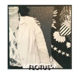50. Lambchop
FLOTUS
(Merge)
In their thirtieth year, alt. country forefathers Lambchop showed that you can always learn, evolve and adapt. FLOTUS (an acronym representing For Love Often Turns Us Still) is more inventive and contemporary than an act on album twelve has any right to be. The Americana hallmarks are present, but they’re furnished with flickers of electronic interference, burbles of treated vocals and glimpses of reverberating synths. The overall effect is an album for the information age, a document of a time when we’re never truly free from the chatter and murmurings that accompany us constantly. FLOTUS is bookended by two ten-minute-plus masterpieces: the gorgeously affecting In Care Of 8675309 and The Hustle, Kurt Wagner’s “response” to the 1975 Van McCoy disco earworm of the same name. If that doesn’t show an appetite for creativity and invention despite entering your fourth decade as an artist, then I don’t know what does. Joe Rivers
49. Laura Mvula
The Dreaming Room
(RCA Records)
The London Symphony Orchestra are enlisted by Laura Mvula for her second LP, three years on from her dazzling debut Sing To The Moon. The Orchestra do not take too prominent of a role, but instead further extend the already immense canvas that Mvula spans in her sparkling deviations. Mvula is a classically trained vocalist with an absurdly rich tone, and her ability to fluctuate between formidable power and twinkling delicacy is evidence of her control over the dramatics she’ll have honed as part of that training. The backdrop of The Dreaming Room is ridden with slithering, sudden scenic shifts and otherworldly swirls of psychedelic soul. It's an album that demands attention, and requires it to be enjoyed to its fullest extent, but its vivid nature means that Mvula has attention spans on her own tether. The Dreaming Room is equal parts assertive and tender, and its sonic dexterity is stupefying. Carl Purvis
 48. Cymbals Eat Guitars
48. Cymbals Eat Guitars
Pretty Years
(Sinderlyn)
Few records in 2016 fizzled with sheer adrenaline more than Pretty Years. Anchored by Joseph D’Agostino’s unabashedly husky voice, their fourth album is a carousel of the joy, pain, and chaos of being human. Refreshing, introspective and exhilarating all at the same time, Pretty Years is a resounding triumph for a band that have been knocked down by line-up changes and less-than-stellar sales. Each track is so distinctive, yet so vital to the album’s message. Sometimes, sprawling guitar, crashing drums and lavish sax can say more than words. Thankfully, Pretty Years delivers on that front too. “Is this how it’s gonna end?/I’d stay in bed but we’ve got check at 5,” singer Joseph D' Agostino ponders, as he captures this bizarre little thing called life pretty perfectly. Ellis Victoria
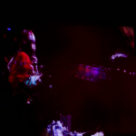47. Deakin
Sleep Cycle
(My Family House)
Animal Collective may be an established element of our musical landscape, but co-founder Josh “Deakin” Dibb has proven to be something of an enigma. He has only contributed to one Animal Collective record since 2007 and was embroiled in a minor controversy earlier in the decade when he disappointed backers with a poorly handled Kickstarter project. Now, with his parent band stuck in something of a creative rut, Deakin has chosen the ideal moment to emerge from the shadows with his solo debut. Sleep Cycle certainly shares a lot of common ground with Animal Collective, but it's a much subtler proposition, as Deakin's more understated vocals allow room for his intelligent ideas to take shape. It would be overly simplistic, not to mention disrespectful, to label Sleep Cycle Animal Collective without the increasingly cloying Panda Bear harmonies, but it is refreshing to see one of the quartet delivering some sugar-free psychedelia. David Coleman
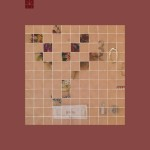46. Touché Amore
Stage Four
(Epitaph Records)
When a loved one is lost, the silence becomes deafening. No amount of noise can shake the fact that everything is different now: Your favorite songs are different, Halloween is different, even home is different. In the past, Touché Amore would synthesize personal trauma with full intensity – blisteringly tangled post-hardcore and Jeremy Bolm’s desperate screams confronting anguish with the speed and force of a shotgun shell. But with the passing of Bolm’s mother, something changed in the expression. Stage Four is Bolm’s tribute to his late mother, and though the pain is evident in his devastating lyrics (“She passed away about an hour ago, while you were onstage living the dream” strikes a harrowing chord), musically, they've never sounded more patient and elegant, with gentle instrumentals and clean vocals fleshing out the chaos. It’s a rare alchemy of love and pain few hardcore bands achieve. Peter Quinton
 45. Hamilton Leithauser + Rostam
45. Hamilton Leithauser + Rostam
I Had a Dream That You Were Mine
(Glassnote)
It’s interesting that Hamilton Leithuaser didn’t bill this as his second solo album, but as an equal collaboration. This is the result of years of work, finally brought to fruition as a result of the Walkmen’s hiatus and Rostam’s departure from Vampire Weekend. The album may be indebted to classic American pop in many ways, since it builds upon those foundations rather than attempting to recreate the past. Rostam’s songwriting and production shines, but for every change of style, Leithauser matches it with some of the best vocal performances of his career; whether he’s echoing Cohen on In a Black Out, or Dylan on The Bride’s Dad. It remains to be seen if this is the beginning or the culmination of their work together, but I Had a Dream… is a sign that both artists’ stock will keep rising - whether their future is with old projects or new. Matthew Smith
44. Whitney
Light Upon the Lake
(Secretly Canadian)
Light Upon The Lake feels like an album that could only ever be a debut. It often sounds so wide-eyed and endearing in its innocence it’s easy to forget that Ehrlich and Kakacek were established members of Smith Westerns before their breakup in 2014. Whitney manage to produce an album reminiscent of 60’s Americana without ever risking becoming a tribute act.The more contemplative No Woman and Dave’s Song highlight the strength of Ehrlich’s lyrics, and his falsetto contributes to a charming, nostalgic sound that’s difficult not to be drawn to. When all these factors come together, as they repeatedly do, it’s a gorgeous record. In a year of high profile comebacks, Light Upon the Lake stands out as one of the debuts that can proudly stand alongside them. - Matthew Smith
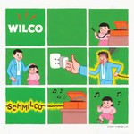43. Wilco
Schmilco
(Dbpm Records)
In stark contrast to last year's Star Wars, the playing here is toned down, the band opting for an intimate semi-acoustic approach that sets the stage for Jeff Tweedy's recollections. The images and musings are potent, with tracks like Normal America Kids and Nope blurring the line between poetic self-expression and therapy. The emotional attic is aired out for good in a quest for self-awareness, including remembrances about his mother and grandmother on Happiness and Quarters. "I know that I'm unknowing/I'm never totally right," Tweedy sings on Cry All Day, realizing he's unprepared to fight the future. Locator suggests that there's no freedom at all in the world when technology can find us anywhere. Finding who we are is tougher, though--there are no apps for it. Angel Aguilar
 42. King Gizzard & the Lizard Wizard
42. King Gizzard & the Lizard Wizard
Nonagon Infinity
(ATO Records)
From the first chord in opener Robot Stop, it’s obvious that King Gizzard and the Lizard Wizard’s Nonagon Infinity is not a ride for the faint-hearted. Anarchic, unpredictable, riotous and relentless, the album starts as it means to go on; aggressive and in-your-face, not even stopping for a breath between tracks until, 41 minutes later, it cycles back to the beginning. Thankfully, the album has significant artistic merit to justify what could perhaps otherwise be considered as gimmicks. The joy of Nonagon Infinity comes in discovering the intricacies that reveal themselves over repeated plays, a reward to the listener who looks to what lies underneath. Craig Stevens
 41. Jessy Lanza
41. Jessy Lanza
Oh No
(Hyperdub)
The Canadian singer’s sophomore album takes the clinical, sometimes distant, components of electronica and douses them in femininity. Sharp as a knife, Oh No is a glimmering pastiche, effortlessly blending the influence of Detroit techno, polarising PC Music and infectious house, topped with vocals that flit between Aaliyah’s dreamlike delivery and Grimes at her jerkiest. Lanza’s sound is an accomplished one, with savvy and skill bubbling under each track. Her voice is the most diverse tool in her possession. Vv Violence stabs with all the charm of a spoiled brat, while Vivica glows with the sincere tones of 90s female-fronted R&B. Despite clocking in at only ten tracks, Oh No is a rich and intense piece of work that deserves multiple spins to uncover every exquisite detail. Ellis Victoria
 40. Huerco S.
40. Huerco S.
For Those of You Who Have Never (And Also Those Who Have)
(Proibito)
If synthesizers had dreams, they’d probably sound something like Huerco S.’s latest album. With its multicolored oceans of soft drones and looped melodies, For Those Of You Who Have Never is made up of sounds that could only be unspooled from the subconscious; its ambient soundscapes built from equal parts order and disorder. Loops of spritely, hidden synth melodies in tracks like A Sea Of Love and Promises of Fertility make for calm serene waters, while the ominous drones of Lifeblood and seasick rhythms of Marked For Life create unreliable shifts in the tide. Huerco S. described his writing process as “falling asleep on my synth,” and with his opus, he captures all of the dream-world’s complexities – peace, confusion, love, fear, nostalgia – without a single word uttered. Peter Quinton
 39. White Lung
39. White Lung
Paradise
(Domino)
Singer Mish Barber-Way has an amazing set of pipes that cut through fast-paced power chords. This time around her voice is higher in the mix, which adds nuance to tracks like Kiss Me When I Bleed and Below, heightening the drama. This attention to recording dynamics is a good thing, and actually the only concession to mainstream tastes, considering that the band's no-holds-barred approach is still there for their fourth album. They serve here ten sizzling bursts of compressed energy with not pause for dull ballads. Guitarist Kenneth William's style swings between hardcore thrashing and post-punk sweeps, sounding like a Johnny Marr gone metal on songs like Hungry and Narcoleptic. All in all, a great party album. Angel Aguilar
 38. Minor Victories
38. Minor Victories
Minor Victories
(Fat Possum)
When Stuart Braithwaite was asked what Minor Victories' debut would sound like, he said "To be honest, I think if you know the music that all of us have made, it won't really surprise you. It has a lot of the good elements from everyone's bands." He's not wrong. Given that this album was born out of collaboration between members of Slowdive, Mogwai and Editors, you may think that makes Minor Victories too good to be true. But not only does it meet expectations for a supergroup, it surpasses them. Listen to that mix of bouncy synths and hurricane strings on A Hundred Ropes. Or try Rachel Goswell's emotional, breathy vocal performance on Breaking My Light. You could also give the shredded, aggressive Cogs a chance. Hell, give any of these songs a shot. You won't be disappointed. Joe Marvilli
37. NAO
For All We Know
(RCA / Little Tokyo)
What has made Nao's music work so well from the beginning is how it can feel blissfully out of touch but somehow modern at the same time. Over a handful of impressive EP's, she honed a sound that stranded together strains of funk, neo-soul and R&B indebted to both the 90s and the 00s. Where most artists lose themselves in the rabbit holes of nostalgia, Nao crafts a sound both distinct and contemporary on its own terms. Over the 18 tracks of her proper full-length, For All We Know, she continues to build on that promise by seamlessly integrating various influences while displaying her continued growth as a vocalist. She uses the expanded space to explore themes of past relationships and personal growth in a voice that has grown, confident and defiant, but also effortlessly graceful, making her a promising breath of fresh air in an otherwise crowded room. Jeremy Monroe
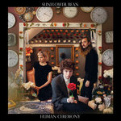36. Sunflower Bean
Human Ceremony
(Fat Possum)
Human Ceremony is an unexpectedly fresh take on some overdone genres. Sunflower Bean's debut album opens with the title track, a perfectly inoffensive and utterly forgettable bit of twee that could easily blend into the background of so many albums collecting dust on your shelf. Maybe a bit ironic that the track the album is presumably named for is also its weakest; a risky move for a band that seems to immediately pop out of its cocoon at the very moment the first chord of the second track is struck. Maybe for a band of teenagers, that's precisely the point: emulating their heroes through "generic" copies of more famous tracks before hitting their own stride is a rite of passage we don't often hear on tape (maybe not since Conor Oberst?). As we progress through the album, early Magnetic Fields begin a tug of war with Nico, Sonic Youth, and even T. Rex against Black Sabbath. It will be interesting to see where they evolve with a little polish. Gabbie Nirenburg
35. Swans
The Glowing Man
(Young God)
Swans’ late-career renaissance was an unprecedented success. But it shouldn’t be surprising - even if Michael Gira has enjoyed limitless creative control with his Young God imprint since the early nineties, it wasn’t until 2012’s master work The Seer where he took it upon himself to completely encapsulate everything he’d ever achieved into a singular musical experience. It was so successful that Gira decided to repeat it three times over with a six-hour long trilogy. And in The Glowing Man, his most esoteric and sure to be overlooked down the road, Gira is putting an indefinite hold to the Swans name but not without cleansing his every pore before moving on to the afterlife. His mantric exhalations and patient, though slithering, compositions evoke a dignified final disposition, and yet a majority of the symbolism in The Glowing Man is inspired by this undying thirst for life. The turbulent, throat-grabbing title track places this into perspective, where Gira reflects on the dual nature of leading an enlightened path into transcendence. The faint, and oftentimes improvisational performance style only adds to the album’s deceptively crude narrative. Maybe we haven’t really heard the last of Gira, but for now, his grand exit is nothing short of transfixing. Juan Edgardo Rodríguez
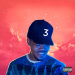34. Chance the Rapper
Coloring Book
(self-released)
2016 has been a monumental year for rap and R&B. Shortly after the release of Lemonade, the music world tuned in to see which artist would knock Beyoncé off the throne of critical and commercial success. Chance the Rapper came the closest out of anyone with his third mixtape, Coloring Book, a gorgeous and gritty blend of rap and gospel. From the laid-back groove of Kanye West collab All We Got and the timeless spiritual vibes of Blessings to the simmering indignation of Mixtape, Coloring Book is all the confirmation we needed that Chance came to stay. Like its predecessor, Acid Rap, Coloring Book injected some faith and excitement into a music scene that sees more innovation with every year but also suffers under the hype generated by big name stars. With his staunch loyalty to independent production tactics, muscly verses, and smiling, streetwise charm, Chance the Rapper now has his fans and the industry watching him with passionately, waiting for the next stunner to drop. Luiza Lodder
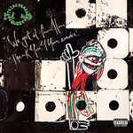33. A Tribe Called Quest
We Got It From Here...Thank You 4 Your Service
(Epic / SME)
Eighteen years on from The Love Movement, after numerous solo records, feuds, and the tragic death of beloved MC Phife Dawg, A Tribe Called Quest returned to deliver the definitive career ending. But We Got It From Here...Thank You 4 Your Service is not just the perfect sign-off from one of hip-hop’s greatest groups, it’s a vitally important record for these uncertain political times. We The People’s “all you black folks, you must go” hook is the most obvious reference to the terrifying madness of burgeoning right-wing populism, but the album is littered with plenty more examples. And yet for all the political themes, there is humour, nostalgia, some amazing sampling (Elton John!), and on the final verse of Dis Generation, some of the finest interplay between four MCs I’ve ever heard. It seems fitting to reflect on a Phife line for the final point. On We The People he rhetorically asks, “who can come back years later, still hit the shot?” I can’t think of any other group who hit it out of the park more emphatically in 2016 than A Tribe Called Quest. David Coleman
32. Weezer
Weezer (White Album)
(Crush)
Having written Weezer off as a spent force more than a decade ago, I certainly didn't expect to be listing Weezer (White Album) among my top ten records of 2016. As is often the case when a much-loved artist transitions into a period of decline, a proportion of their fanbase has continued to back them regardless. Every sub-par offering since 2002's Maladroit has been hailed by some as a return to form, or "their best since Pinkerton". Yes, even 2005's awful Make Believe. And having smirked at those optimistic critics who attempted to feast on increasingly rare scraps of quality, I now find myself trying to persuade you to give a damn about a Weezer album in 2016. The world has turned, indeed. Now let's be honest, The White Album may not represent a return to vintage mid-nineties form - that ship has long since set sail - but it is very much a return to relevance, featuring what is genuinely some of the band’s finest work from the last 20 years. Whether this is a temporary blip on the band’s slow descent into the abyss remains to be seen, but it sure is refreshing to hear Rivers Cuomo and the boys recapturing the magic once again. David Coleman
31. Shura
Nothing's Real
(Polydor)
Opening with a track about being hospitalised with a panic attack and closing with a spaced-out love song inspired by the Mass Effect games, Shura’s long-awaited debut album wasn’t the average synth-pop record. While the influence of classic-era Madonna could be heard all over the West London-based singer/songwriter/producer’s LP, its attitude was very different. Riddled with anxieties and rooted in tangible personal details (single 2Shy might feature pop’s only name-check for the rather unglamorous Uxbridge Road), Nothing’s Real combines fizzy, slick production with lyrics about regret, self-consciousness and awkward social situations. It’s pop music for introverts - for dancing around your bedroom rather than at the club – and is all the more endearing, and essential, for it. Mark Davison
 30. Sarah Neufeld
30. Sarah Neufeld
The Ridge
(Paper Bag)
Further fulfilling the promise of last year's widely celebrated collaboration with circular-breathing multi-reed player Colin Stetson, minimalist violinist and composer Sarah Neufeld implements her lithe, airy voice to dramatic emotional effect on The Ridge. While her earlier solo work was more tethered to the disciplines of classical and chamber music, the intermittent jazzy drum fills (courtesy of Arcade Fire bandmate Jeremy Gara), synth bass, and shifts between intelligible but mystical lyricism and poignant murmurs collectively lend these eight compositions the surreal sensibility of art pop. Neufeld's consistently mesmerizing arrangements and gorgeous tonality peak on A Long Awaited Scar, the progressive, sprawling centerpiece. A complement to the almost post-rock approach on the Lyricon-enhanced title track, Neufeld's rhythmic and sonic evolution feel so organic here; her mantric vocalizations seamlessly synchronize with virtuosic performance. Grant Phipps
 29. PJ Harvey
29. PJ Harvey
The Hope Six Demolition Project
(Island)
If Let England Shake painted a picture of staleness and discontent, outside the kingdom the prospects seem more disheartening. For the new album, Harvey is a world traveler on a mission to write down what she finds, but she can't be a dispassionate reporter; the artist in her takes over, with empathy leading the way. Considering that we're constantly bombarded with war news, not reacting on a personal level, her mission here is to engage us and make us feel. Songs like The Wheel, The Ministry of Defence, and A Line in the Sand are built for an emotional response that is coaxed through haunting arrangements and you-are-there imagery. On Dollar, Dollar, for instance, a recording of a street scene is transformed into a reflection on poverty. Face to face with human misery, Harvey can't look away. We shouldn't either. Angel Aguilar
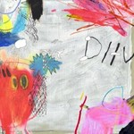28. DIIV
Is the Is Are
(Captured Tracks)
Is the Is Are doesn't exactly push DIIV into newer or exciting sonic territories, but that doesn't mean many of the complaints about it being little more than a polished version of their 2012 debut Oshin entirely valid either. What Is the Is Are lacks in innovation it more than makes up for with consolidation. It's a full band album, and one that presents them as a tightly focused unit. By stripping away some of the reverb and haze of their debut, DIIV reveal a greater emotional depth and range that was easy to miss on Oshin. And, despite the newfound gloss and their shimmering take on shoegaze and dream-pop, Is the Is Are is still a very troubling record about addiction whose music and subject matter are equally depressive and gloomy, bright and somehow oddly comforting. As an album, it's an immersive experience and one worth repeated listens. Jeremy Monroe
27. Preoccupations
Preoccupations
(Jagjaguwar)
It took Preoccupations a whole seven months to decide on a new name after dropping Viet Cong, but the newly-named Calgary band have released another self-titled album that crackles and pummels, with an ongoing energy as taut as it could be without falling apart. Matt Flegel’s dark, thrumming vocals are agitated but incessantly focused, and add no splash of colour to a soundscape that is never anything other than grey. Reading that might put you off checking Preoccupations out if you haven’t listened to their record, or indeed Viet Cong previously, but what makes the band so beguiling is their ability to balance the abrasive features of their sound. They might be balanced very precariously, but the equilibrium is so precise, that sounds that should be earsplitting are intoxicating and hypnotising. Carl Purvis
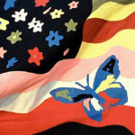26. The Avalanches
Wildflower
(Astralwerks)
If you miss the early 2000s (and you do), are a little embarrassed of your long-gone mashup obsession (and you are), or believe that disco hip-hop should be a genre (and you should), then The Avalanches' Wildflower will feel like a sorely needed embrace. This perfect pastiche of genres undulates seamlessly between "does this remind you of late era Beatles records?" (it does - the group-cum-duo somehow managed to get Paul McCartney and Yoko Ono's permission to include a high school chorus' cover of Come Together on one of the best and funniest tracks on the record) and "this sounds an awful lot like early '90s rap" (it should - Biz Markie voices an entire cast of characters on this aural roller-coaster). Sixteen years in the making, this album is the perfect sequel to Since I Left You, though long overdue. Above and beyond the samples, Wildflower recalls everything from The Go! Team to MF Doom to the Beach Boys. If it fails anywhere, it's that the sound hasn't necessarily matured; The Avalanches' have slimmed down, but they haven't grown up. Still, breaking new ground isn't particularly common or necessary... and nostalgia with a sense of humor is always welcome. Gabbie Nirenburg
 25. Case / Lang / Veirs
25. Case / Lang / Veirs
case / lang / veirs
(Anti-)
Whilst all operating in a similar wheelhouse, Neko Case, k.d. lang and Laura Veirs are all idiosyncratic enough that the prospect of a collaboration between the three was sure to cause some consternation. Happily, it proved a fruitful project and, extraordinarily, it sounds as if they were born to play together. Opening track, Atomic Number, begins with each vocalist taking a line in turn before the chorus blossoms into life with stunning harmonies. On case/lang/veirs, the trio each manage to retain enough of themselves to imbue the album with character while simultaneously not being too proud to demur to a colleague when the song demands. It’s already been suggested that the album was a one-off project, but in actuality, it’s a working relationship too rich and rewarding not to be revisited. The campaign for case/lang/veirs Mk II begins here. Joe Rivers
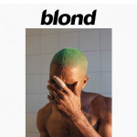24. Frank Ocean
Blonde
(self-released)
Frank Ocean's sophomore album took a hot minute to finally be released, but when it finally dropped, fans and critics alike admitted it was worth the wait. Blonde (stylized without the "e" on the album cover) is a beautiful, fractured portrait of a mind taken over by melancholia. The synths buzz and the vocals crackle with distortions and autotune; snippets of recorded interviews break up the songs while a mother's lecture about marijuana (among other interludes) interrupts the tracklist; woozy meditations on drugs and sex are interspersed with aggressive outbursts and smackdowns. Blonde's crowning glory, however, is the heartbreaking lyricism of Ocean's verses. "There's a bull and a matador dueling in the sky," he sings on Solo, beautifully encapsulating the liberation that comes from indulging in vice and the dependence that results when that same vice takes over. Frank Ocean isn't known for being timely or prolific when it comes to releasing new material, but we can console ourselves with the fact that Blonde has the complexity and the melodiousness to withstand countless plays--definitely enough to get us through the next couple of Ocean-less years. Luiza Lodder
 23. Blood Orange
23. Blood Orange
Freetown Sound
(Domino)
Freetown Sound is Dev Hynes’ third studio release under his Blood Orange moniker and arguably his most ambitious studio album to date. It’s also his most politicised, questioning identity and addressing oppression and stereotypes. Ahead of its release in June, Hynes wrote on Instagram that the album was intended for those who had been told they were "not black enough, too black, too queer, not queer the right way." This is an album that is making a statement. But it’s also so much more than that. It’s an album which highlights Hynes’s talent as a songwriter, multi-instrumentalist and production in a way that none of his other studio albums to date have quite managed to achieve. Craig Stevens
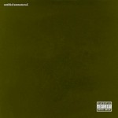22. Kendrick Lamar
untitled unmastered.
(Aftermath)
While untitled unmastered. technically qualifies as more of a compilation of demos than a proper release, Kendrick Lamar’s surprise follow-up to his excellent To Pimp A Butterfly LP stands as a worthy addition to his canon, an album rich with multi-instrumental explorations of jazz, funk, blues and soul. Lamar continues to be every bit the lyrical craftsman, ably working through every track with a seamlessness that’s always remarkable. The first track that caught my attention was untitled 03 | 05.28.2013, Thundercat’s minimal bass strokes driving Lamar’s analysis of race and the American dream. Also notable is untitled 5 | 09.21.2014, an arpeggiated series of bass notes, light brass, and opening stanza from singer Anna Wise, providing a captivating backdrop for Lamar, Punch and Jay Rock to throw around verses. Sean Caldwell
21. Shearwater
Jet Plane and Oxbow
(Sub Pop)
When people think of Shearwater, it's doubtful that heart-racing songs with joyous synths are what comes to mind. At least, that was the case until this year. Jet Plane and Oxbow isn't as much of a reinvention as a redirection. The band took their folksy intimacy and expanded it by a near-infinite degree. This isn't going to widescreen. This is skipping widescreen for IMAX epics. When you have melodies like those in Quiet Americans, A Long Time Away and Only Child, why wouldn't you shout them from the rooftops? But the shift only highlights what's already there: Jonathan Meiburg's impressive, wide-ranging voice, a taste for the orchestral, sly lyrics and a connection both cerebral and emotional. No amount of electronics could change those factors. Instead, the shift in sound enhances them. Joe Marvilli
 20. Parquet Courts
20. Parquet Courts
Human Performance
(Rough Trade)
After last year’s experimental Monastic Living, Parquet Courts return to what they do best. Human Performance encapsulates what drew fans to their earlier output; it’s just as witty and rough as early releases, but also sees the band become more critical. It’s a testament to their talents as lyricists that Two Dead Cops - a punk song about a real incident in his neighbourhood - and Dust can sit alongside each other with both feeling just as urgent and important. Human Performance may not be political, but it is socially-conscious - in many ways it’s a case study of human existence, through loneliness, anxiety and the monotony of city life. Parquet Courts have always been compelling when Savage is on a roll, but on Human Performance, the mellower tracks like It’s Gonna Happen and Steady On My Mind show they’re a more versatile band than many gave them credit for. Matthew Smith
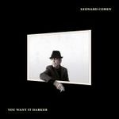19. Leonard Cohen
You Want It Darker
(Columbia)
The much beloved singer-songwriter Leonard Cohen passed away this year at the age of 82 a little less than a month after releasing You Want It Darker, his chilling and beautiful closing act. As was the case with David Bowie’s Blackstar earlier this year, Cohen’s ailing health weighs heavy within the album’s contents, his very dry admission, “Hineni, hineni… I’m ready, my Lord,” less of a self-assuring pep talk before venturing into the unknown than an aware declaration to his Maker. And while Cohen’s words sound consumed by fate for most of the album, (“I’m leaving the table/I’m out of the game…,” “I’m traveling light/It’s au revoir/My once so bright/My fallen star…”), he addresses love and loss with the candor and clarity of a being who has only known and expressed truth in his life. “They ought to give my heart a medal/For letting go of you/When I turned my back on the devil/Turned my back on the angel too,” his voice somewhere between a spoken blues or gravelly croon as he sings in On the Level, testimony from an artist whose finale proves as essential as his most celebrated work. Sean Caldwell
 18. James Blake
18. James Blake
The Colour in Anything
(Polydor)
James Blake had been giving progress reports on his third studio album, the album that ultimately became The Colour In Anything, for some months prior to its release in May. But its release still came as something of a surprise, being formally announced just a few hours before it was then made available. The follow-up to 2013’s Mercury prize-winning Overgrown, The Colour In Anything is an epic piece of work, with 17 tracks that together run for over 70 minutes. It features contributions from Bon Iver’s Justin Vernon, Frank Ocean and production from Rick Rubin, as well as cover art from children’s book illustrator Quentin Blake. Its sound is no great evolution from either Overgrown or Blake’s self-titled debut; it’s mostly down-tempo, dark, moody electronica with the occasional ballad (all of which exploit Blake’s effortless falsetto). But although Blake may not be steering far from the ground in which he’s previously established himself, it really doesn’t matter when the results are this good. Craig Stevens
 17. Wild Beasts
17. Wild Beasts
Boy King
(Domino)
Lead singer Hayden Thorpe's syrupy falsetto leads us through this bass- and synth-heavy concept album, a modern man's nuanced expression of untethered testosterone. Boy King is dripping with sex (it's a hands-down winner of the "Best Album for Making Out" category), echoing a leather-clad Trent Reznor. Cocky and even a bit smarmy though the record may be -- a musical embodiment of a successful pick-up line -- it somehow never cloys. There's a self-awareness throughout that excuses the overwhelming attitude. Lyrics that belie outrageously aggrandizing song titles take the the pervasive grin down just a touch, though they aren't particularly meaningful. And while a track like Alpha Female seems like a passive aggressive attempt at inclusion, we're treated to a chink in the armor with Dreamliner, the soft chamber-pop finale with the vibrato of Anohni (of Antony and the Johnson's fame). Juxtaposed next to Big Cat, the album's opener, the two tracks bookend a musically (if not lyrically) complex peek into the "arrogant," sex-obsessed masculinity as it plays out in our age. Gabbie Nirenburg
 16. Michael Kiwanuka
16. Michael Kiwanuka
Love & Hate
(Interscope)
In April, the release of single Black Man In A White World signalled a comeback for Michael Kiwanuka that immediately demanded attention. Released in the midst of a year where racial hate and division has been agonisingly conspicuous, the single began with handclaps and a capella vocals which Kiwanuka himself described as “slave music.” The introduction of a flustered, funk-rich guitar riff went on to anchor an airtight skirmish of burgeoning action, and it was clear that the four years that Kiwanuka had spent crafting his second LP had allowed him to fit his music with marked authenticity and identity. Opening track Cold Little Heart stuns from the get-go, even with its ten-minute runtime (of which the first half is a disinclined instrumental). When the song bursts into focus, Kiwanuka’s voice mesmerises with a troubled twang aching with unadulterated soul. The title track’s wordless backing vocals have the ear worming staying power of anything else heard this year, and typifies the exceptional song structures that are a constant on the record. Danger Mouse’s production work is a crucial aspect of the album’s tightness and unerring focus, in particular turning the rhythm section into an authoritarian razorblade. A record full of afflicted contemplation, obstructed spirit and extraordinary execution. Carl Purvis
 15. Jenny Hval
15. Jenny Hval
Blood Bitch
(Sacred Bones)
Since signing to Sacred Bones in early 2015, Norwegian avant-pop performance artist Jenny Hval has relegated guitar-based folk impressions to embrace her affinity for electronica. What has sustained, though, is her evocative, elliptical eloquence. Blood Bitch dynamically weaves a confessional and wintry tale about (menstrual) blood, love, failure, death, capitalism, and cinematic language that oscillates between dark ambient sound collage and diaristic, poetic pop song concept. The pulsating synthesizers that underscore the vocal reverb of its first single, Female Vampire, harness Hval's knack for fusing hypnotically abstract production with accessible melodies, all while setting the eerie mood by sampling the opening occult percussion of Bruno Nicolai's dread-drenched score to Christina, Princess of Eroticism (1973). Creaky, deliberate electric piano notes of Untamed Region and the IDM beat of The Great Undressing dive deeper into Hval's psyche and her utilization of field-recorded sound with clips of a philosophical monologue about modern bewilderment and self-referential conversation, respectively. By its end, Hval's silvery singing voice seems to fade into hauntingly rhetorical whispers, but not before imparting the vital aches of artistic and sexual obsession. Grant Phipps
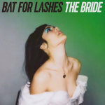14. Bat for Lashes
The Bride
(Parlophone)
Ten years into her career and Natasha Khan continues to be an uncompromising and restless artist. Shifting from chamber and folk music to emotionally charged pop music, she continues to challenge conventional notions of what pop music can and should do. Moving beyond its constraints to create rich and varied pieces of that can be instantly gratifying and also compel you to lean in a little closer. The Bride is no exception, and it could easily stand as her most challenging and ambitious statement to date. A concept album centered around the story of a woman left at the altar after her husband dies in a car crash on the way to the wedding, it's a beautifully dark song cycle that touches on tragedy, sorrow, and the healing process that follows. It's an especially gripping listen, yet Khan doesn't allow it to revel in melancholy; the music is haunting and theatrical, but it's also beautiful and almost eerily uplifting. As an album, The Bride is meant to be experienced as a whole, but it's well worth giving yourself over to in the end. Jeremy Monroe
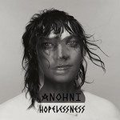13. ANOHNI
Hopelessness
(Secretly Canadian)
2016 has been an eventful, confusing and frequently horrifying year, so how best to mark it than with an album that was eventful, confusing and frequently horrifying in itself. The overriding lamenting theme of environmental catastrophe isn’t a new one for ANOHNI, having driven much of her previous work with Antony and the Johnsons. However, Hopelessness, her debut as ANOHNI, was a considerably more angry and direct work (perhaps a little too direct at times, such as in the self-explanatory dirge of Obama – a track that’s since been expanded and improved in ANOHNI’s striking live show) than her reserved, respectable chamber-pop past. Co-produced by ANOHNI, Hudson Mohawke and Oneohtrix Point Never, Hopelessness sounded challengingly current, while harking back to the explicitly political queer electro-pop of the 1980s. And, while ANOHNI’s extraordinary voice remains a large part of her USP, the frequently euphoric beats not only made the subject matter more accessible, but suggested self-awareness and a sense of culpability in their revelling in the face of destruction. Mark Davison
 12. Danny Brown
12. Danny Brown
Atrocity Exhibition
(Warp)
Danny Brown confronts his own mental disarray with shocking detail in Atrocity Exhibition. It’s a bleak place to visit, and yet he spits verses with a fire that’s both fierce and persistently entertaining. Brown is good at it and he knows it. But he’s also a shamelessly vulnerable personality, and in Atrocity, he uses substance abuse as a vehicle to decode his own behavioral limitations. It’d be impossible to reference a single line because its presence is ubiquitous, something you can’t either mask or ignore, and yet what an outsider’s lens sees is a remarkable sense of artistic acuity. British producer Paul White is there to guide his every step, making sense out of Brown’s distressing anecdotal accounts with taunt sampling and odd sonic juxtapositions that never overshadow his expressiveness. Frankly, it’d be impossible to speak over Brown under any context. And Brown makes every anxious second count - this is art perfected by means of inward-seeking comfort and confrontation. Juan Edgardo Rodríguez
 11. Savages
11. Savages
Adore Life
(Matador)
Following the acclaim of their first LP, 2013’s Silence Yourself, the post-punk quartet known as Savages offered their much-anticipated follow-up in 2016, Adore Life, an artful and aggressive treatise on love that more than delivers on the intensity promised by its predecessor. While it’s clear Savages smoothed out some of the rougher edges heard on their last album, Adore Life is no less exciting, the rambunctious persistence of The Answer leading into the disco-propulsion of Evil, throbbing and hypnotic rhythmic loops of Sad Person met by Adore’s sultry strut and patient climax. Vocalist Jehnny Beth’s adept expression remains crucial to the band’s makeup, a sound that owes some thanks to the likes of Siouxsie Sioux or Lizzy Mercier Descloux without being at all a facsimile. The distant scream she lets out that sets Slowing Down the World off into a discordant haze a minute from the song’s close is one of my musical favorite moments of the year. Adore Life is the work of a band that continues to thrive, their creative growth evident and offering much to await in the coming years. Sean Caldwell
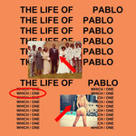10. Kanye West
The Life of Pablo
(self-released)
“Name one genius that ain’t crazy.” Mr. West making claims of his genius is nothing new, but that added disclaimer is a whole lot more revealing. With The Life Of Pablo, Kanye’s never felt more comfortable in his gonzo skin. No idea is too Kanye for Kanye these days, and TLOP is the perfect tapestry of that. A Capella self-love, Street Fighter samples, an outro three songs away from the end, and some misogynistic celeb-beef bait are all fair game here, and then there’s his take on “gospel.” Here, Kanye mashes the sacred and secular together like copulating Barbie dolls. Sermons come from toddlers on Instagram, testimonies come with trap beats, and Mary meets Joseph in the club ‘round hella thugs. In Kanye’s mind, all of these concepts are album-ready gold. And for the most part, he’s right! TLOP is loaded with fantastic, skyscraping hooks, memorable verses by Yeezy & guests, and just damn good songs. Here he’s back to basics Kanye (No More Parties in LA), emotional Kanye (Real Friends), electro-fried Kanye (Fade), and next-level Kanye (Ultralight Beam) all in one. I look and look around and there’s so many Kanyes, and they all help make TLOP utterly unforgettable. Peter Quinton
9. Solange
A Seat at the Table
(Saint Records / Columbia)
Solange is angry. Really angry. And justifiably angry. Most people, faced with dealing with the anger Solange is experiencing, would scream, shout, rave and let loose howls of frustration. Solange doesn’t do this. She knows that’s what they want her to do. She faces the objects of her fury with poise, with strength, and with a graceful defiance. A Seat at the Table, Solange’s third full-length LP, is a record about America today, about Black Lives Matter, and about the fact that despite it being 2016, sometimes it seems as though society is still in a state of regression. It’s not brash, not immediate and not bombastic. Often, the same beat will percolate through an entire track unaltered, and it gives Solange’s treatises space to exhale. On album highlights like Mad or the soaring Cranes in the Sky, she articulates her feelings with such warmth and vulnerability that it feels both personal and universal at once. In a year where R&B and hip-hop’s big names turned inwards for inspiration, Solange proved that she truly deserves her place alongside the very best of her peers. Joe Rivers
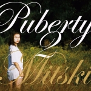8. Mitski
Puberty 2
(Dead Oceans)
More than any of her previous work, Puberty 2 is the album where Mitski found her own musical identity. How? By exploring her own personal identity. It's in her struggle and ultimate rejection of being Your Best American Girl. It's in the mechanical percussion and drunk saxophones of Happy. It's in the anxious guitar strums of My Body's Made of Crushed Little Stars. It's in the deathly synths of Crack Baby. Through it all, Mitski voices her desire, desperation, panic, detachedness, sadness and, by the end, something approaching acceptance. "And I'll go to work and I'll go to sleep/And I'll love the littler things," she sings on A Burning Hill. This is an album about finding comfort in your own skin. It's a work that's never done, that moves in fits and starts. But for everyone who's felt like an outcast, Mitski uses her own life on Puberty 2 to show a path forward, flaws intact and scars proudly on display. - Joe Marvilli
 7. Angel Olsen
7. Angel Olsen
My Woman
(Jagjaguwar)
“For what I face, I faced before,” croons Angel Olsen on the woozy, dreamlike Heart Shaped Face. At 29 and with three albums under her belt, Olsen fervently stokes the fire of life. Her gift is a unique one: she acknowledges the quiet embers are just as significant as the illuminating blazes. “All my life I thought I’d change,” Olsen repeats over and over toward a whirlwind of Fleetwood Mac-esque guitars on Sister. Olsen’s airy delivery of her newfound crushing awareness softens the fact that this is a realisation that has the power to knock the wind out of us – such is the magic of My Woman. Dreamlike opener Intern oozes with the glistening mystery and enchantment of Lynchian worlds, as Olsen exposes more home truths with her ethereal voice: “I just want to be alive, make something real.” From the spellbinding soundscapes of Woman to the stark, tear-choked finale of Pops, My Woman is a devastating, but crucial record. 2016 has been a mystifying year of loss, separation, and uncertainty. Connected by the universal human experience, Olsen’s affecting collection of songs offer authenticity and empathy in a time when we need it most. Ellis Victoria
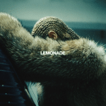6. Beyoncé
Lemonade
(Parkwood Entertainment)
When her eponymous surprise release took the world by storm in December 2013, Beyoncé had already succeeded in cutting all ties to the performer we all thought she was. That surprise release was a brave, raw, and lush exploration of married life: the sex, the doubt, the reconciliations. In it, Beyoncé turned inwards, and produced an excellent album, although not without its weaknesses. But everything changed--again--this April, when a series of Lemonade teasers began flashing through her social media accounts with no explanation. The video for Formation, which sees Beyoncé proudly embracing her blackness, had already galvanized the Internet for its political themes and imagery--the singer draping herself over a sinking police car, a little boy dancing in front of a row of riot police, snippets of a documentary about Hurricane Katrina's devastation of New Orleans. On April 23rd, the record's accompanying 60-minute film debuted on HBO. The whole project was a genre-melding masterpiece, a feast for the eyes and ears that transformed pain into hope, conflict into resolution, and silence into honesty. 2016 was the year Beyoncé smashed her reputation for mercenary impartiality by gloriously celebrating the strength of African American women and the challenges, disappointments and joys that they face. All in all, Lemonade is a triumph of social awareness, sonic artistry and commercial success that practically no other artist can even dream of accomplishing nowadays. Adele better keep a close eye on that Album of the Year Grammy--as Bey says it herself, "Slay trick or you get eliminated." Luiza Lodder
 5. Car Seat Headrest
5. Car Seat Headrest
Teens of Denial
(Matador)
I’ve listened to Teens of Denial at least twice as much as anything else in 2016. I can’t remember the last time a bonafide indie-rock album dominated my listening habits and held my attention as long as this one. Then again, that’s because I haven’t heard an indie-rock album as good as Will Toledo’s latest effort for several years. If blending all the best bits of a popular genre into one cohesive record is easy, why is no one else doing it as successfully as Car Seat Headrest? There are anthems (Drunk Drivers/Killer Whales), guitar heroics (Vincent), moments of experimentation, and faint echoes of a whole host of genre staples (Pavement, Weezer, The Strokes, etc.), but Teens of Denial is no tribute act. As the world implodes around us, we need serious, critical musicians to highlight injustices, call out hypocrisy and shine a light on valuable causes. This is true. But we also need artists like Will Toledo to remind us why we fell in love with indie-rock in the first place and to suggest that maybe, just maybe, there’s still life in the old dog yet. David Coleman
 4. Bon Iver
4. Bon Iver
22, A Million
(Jagjaguwar)
So, just what was Justin Vernon on about on his extremely cryptic, eagerly anticipated third album? Who knows. Several months since the album’s release and it’s still difficult to shake the sense that, beneath the obsessively scrawled artwork and the most untypeable track listing since the (very brief) heyday of witch house, there lies precisely nothing of genuine substance. However, Bon Iver’s work has always been more about feeling than meaning, even going back to his break-up record debut, and 22, A Million packs a considerable amount of feeling into its 34 minute run time. Cramming together folk, electronica, AOR, touches of prog and a particularly random collection of samples, the album is both an evocative rendering of Vernon’s personal struggles over the past five years, and a perfect encapsulation of the boundary-free, tasteless consumption of music in the streaming era. And yet, there is still something quite traditional buried in the songwriting at 22, A Million’s core. Whether in hushed hymnals or pealing sax riffs, the innate musicianship of Vernon and his collaborators is always easily identifiable – and perhaps even enhanced and made less overbearingly sweet by the album’s glitchy production. Mark Davison
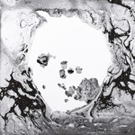3. Radiohead
A Moon Shaped Pool
(XL Recordings)
It’s always been something of a fool’s errand to find some compassion within Radiohead’s entangled ideas and meanings. The band has been continually celebrated for their alternating musical directions, all of which have always explored the deep ruptures of political and social imbalance with a considerable degree of distance. Not that they’ve completely let go of their favored themes, but A Moon Shaped Pool does once again let us peer into another significant transfiguration. The focus has shifted, and absent are the days of letting loose with a groove-oriented electronic strut. Now the songs are gentler, sadder and profoundly considered, accompanied with opulent orchestrations that add pathos to their signature dissonant cadences. But there’s also a far more critical component that encompasses the overall arc of the album: Thom Yorke’s romantic dissolution with his longtime partner. Every intricate detail, from their homemade trinkets to their enigmatic glissandos, is as present as it is fleeting, with hardly any repeated moments as if framing a certain loss of security. Yorke has never sounded so alert, and especially so in the face of loss, raising his frigid voice with a pureness that calms the ears with a sparkling essence. In renouncing the creative affordances that technology provides, at least temporarily, Radiohead offer a far more resourceful alternative: to sit down, close your eyes and breathe in. Juan Edgardo Rodríguez
 2. Nick Cave & the Bad Seeds
2. Nick Cave & the Bad Seeds
Skeleton Tree
(Bad Seed Ltd.)
In July 2015, Nick Cave’s 15-year-old son Arthur died after accidentally falling from a cliff near Brighton. He had taken hallucinogenic drugs for the first time. Cave was already writing and recording Skeleton Tree before the tragic event, but the fact that it was completed after it means that the affliction is felt by listening to the finished article, lurking through its very course, weaving its way through the fibres and textures of the most heart-wrenching songwriting. Lyrically, it isn’t always easy to link Cave’s lyrics directly to the event, but his tone is even more alarmingly fragile and the landscape is bitterly cold. There are moments of pure isolation, remote shivers of vacuum-sealed grief that fester like viruses in the cells of the tracks. In fact, the sadness that resonates from some of the tracks is so intense it’s difficult to stay impervious. Take Girl in Amber for example, where Cave’s voice just about breaks over bare, cinematic grandeur. It’s almost ominous that, in some cases, the most pure forms of grief manifest themselves via the output of a virtuoso, into something so devastatingly beautiful it physically hurts those who are exposed to the output. When the album's title track and closer ends with Cave telling us “it’s all right now” over the most hopeful sounding part of the record, it’s hard to stay unmoved by the consolation. Carl Purvis
1. Davie Bowie
Blackstar
(Columbia)
Released just two days before Bowie's death, Blackstar is regarded by some as Bowie's testament, but there are more layers to this magnificent work. For instance, Lazarus is the centerpiece of the play Bowie was working on, so there's a strong identification with the character he played on The Man Who Fell To Earth. Though the tone of the song is mournful, there's also some humor ("Dropped my cellphone down below/Ain't that just like me"), strongly hinting that death shouldn't be regarded as the ultimate end but as a temporary annoyance on the way to a new stage. This transcendental theme is fully explored on the title track, which brings to mind ancients rituals of death and rebirth, its second movement representing a triumphal state of grace: ("Something happened on the day he died, spirit rose a metre and stepped aside"). By contrast, other tracks veer toward the prosaic side of the spectrum. The Clockwork Orange vibe of Girl Loves Me, the lustful musings of 'Tis A Pity She Was A Whore, and the brutal ironies of Sue suggest there's a learning curve for enlightenment. It gladdens the heart that Bowie, ever true to his creative mind, was still discovering new and truthful things. Angel Aguilar
. . .
So there you have it: our top albums of 2016. We'd love all of you to chime in and tell us what were your favorite albums of this year by reaching out to us either on twitter (@noripcord) or our official facebook page. We hope you enjoyed the list and our coverage throughout the year; wishing you all the best for the holidays and see you again in 2017.
20 December, 2016 - 00:56 — No Ripcord Staff